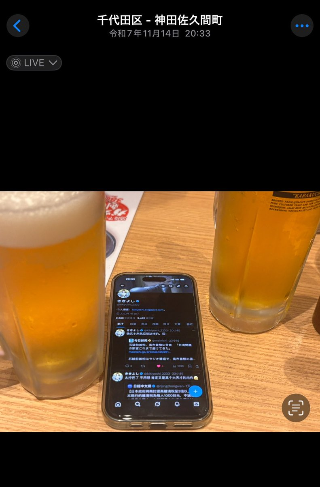

yuki
@shennaichuan_
@jagaimo6681 我滴妈

にゃがいも
@jagaimo6681
心平气和讲，这场闹剧什么时候是个头，我不想卷入麻烦和纷争，我讨厌这种感觉。
我不喜欢撒谎，从小到大都不擅长。而且过去被造过谣，造谣的原因仅仅因为那个人讨厌我，我知道这种感觉多痛苦，所以我也不会做这种事。
下图我翻了和他见面那天的，我和朋友的聊天记录，可以看见日期和时间。 https://t.co/kOjDS4DqFT